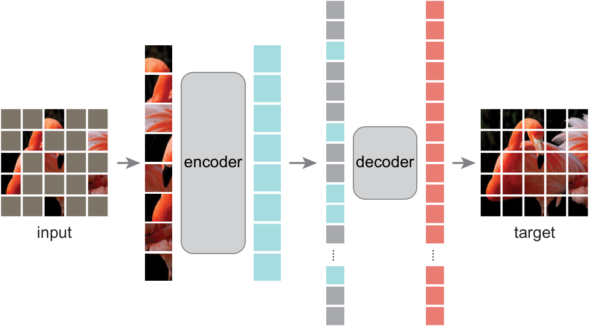
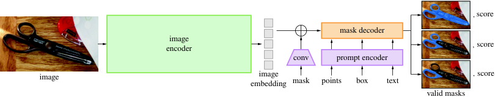

第 14 章 视觉编码器家族
💡 本章导读
多模态 LLM 的"眼睛"是视觉编码器（Vision Encoder）。第 12 章末尾的批判清单指出 CLIP 表示有系统性盲区——本章展开另一半故事：编码器家族远比 CLIP 宽广，每种监督信号塑造不同的表示几何，而编码器的选择已被证明是 MLLM 设计空间中影响最大的单一因素之一（MM1、Prismatic、Cambrian-1 的共同结论）。本章按"监督信号 → 结构 → 分辨率 → 组合"的顺序建立选型框架，并给出可操作的编码器"体检"方法：如何用一小时判断一个编码器是否适合你的下游任务。
1.选择视觉编码器的四个维度
为一个 MLLM 挑选视觉编码器时，实际在权衡四个维度：①监督信号的类型（决定了表示"认识什么"）——分类监督（ImageNet 标签）、图文对比（CLIP/SigLIP）、自监督掩码/自蒸馏（MAE/DINOv2）、分割监督（SAM）；②结构与计算形状（决定 token 数与感受野）——各向同性 ViT vs 层级 Swin vs 卷积 ConvNeXt；③分辨率与 token 预算——336px 静态 vs 动态任意分辨率，直接决定 MLLM 的上下文开销；④生态与许可——权重可用性、变体丰富度、商业许可。
为什么这个选择如此重要？一个直觉化的说法：MLLM 的语言模型只能"加工"视觉编码器给来的信息，无法凭空补回编码器没捕捉到的信息。编码器的输出是 576 个 token——整张图像被压缩到这 576 个向量里，LLM 的全部推理都在与这 576 个向量对话。分辨率不足、监督信号偏科、特征伪影，任何一处损失都是"信息在源头就被扔掉了"，下游的结构创新无法挽回。这就是为什么 Cambrian-1 把自己的研究纲领称为"vision-centric"——先保证眼睛看见，再谈理解。反过来，语言模型侧的升级（7B→72B）在编码器固定的前提下，收益会很快饱和——"更好的眼睛"与"更大的大脑"必须同步升级，而前者常被忽视。
| 编码器 | 监督 | 参数 | 默认分辨率/patch | token 数/图 | 强项 | 典型下游 |
|---|---|---|---|---|---|---|
| CLIP-ViT-L/14 | 图文对比 | 0.3B | 336/14 | 576 | 语义对齐、零样本 | LLaVA 系 |
| SigLIP-SO400M | sigmoid 对比 | 0.4B | 384/14 | 729 | 对比性能+小 batch 友好 | InternVL3 系、PaliGemma |
| SigLIP2 | 对比+定位+感知 | 0.4–1.0B | 多规格 | 729+ | 密集特征增强 | 2025 后新模型主流 |
| EVA-CLIP | 对比（MIM 初始化） | 1–5B | 224–336/14 | 576 | 大规模训练稳定性 | EVA 系 MLLM |
| DINOv2 | 自蒸馏+掩码 | 0.3–1.1B | 518/14 | 1369 | 稠密特征、深度/分割 | 编码器组合、空间任务 |
| SAM ViT-H | 分割 | 0.6B | 1024/16 | 4096 | 边界/形状感知 | grounding 数据构造 |
| InternViT-6B | 对比+MLLM 联训 | 6B | 448/14 | 1024 | 大塔容量 | InternVL 系 |
| Aimv2 / PE 系 | 自回归/掩码 | 0.3–4B | 多规格 | 可变 | 2024-25 新路线 | 新一代 MLLM |
2.监督主干：ViT、Swin 与层级结构之争
ViT（arXiv:2010.11929）把图像切成 16×16 patch、线性投影成 token 序列，交给标准 Transformer——结构极简但需要大数据（JFT-300M 级）才能超越 CNN，因为缺乏卷积的归纳偏置（局部性、平移等变性）。DeiT（arXiv:2012.12877）用知识蒸馏证明 ImageNet-1K 也能训出好 ViT。对 MLLM 最重要的性质是：ViT 输出的是"token 序列"——与语言模型同构，天然可拼接。Swin（arXiv:2103.14030）则引入层级结构：4×4 小 patch 起步，通过 patch merging 逐级下采样，配合滑窗注意力控制计算量——输出多尺度特征图，更像 CNN 的"金字塔"，适合检测/分割，但 token 序列不再是单一长度，与 LLM 的接口稍复杂。
从计算形状看两者的差异值得量化。ViT-B/16 在 224px 下：$N=196$ 个 patch，全局自注意力复杂度 $O(N^2 d)$≈每层 5.5 GFLOPs（每图）；Swin-B 同输入下四个阶段的 token 数为 3136/784/196/49，滑窗内注意力把全局 $O(N^2)$ 限制在 $49^2$ 的窗口内。这种"预算分配"在纯视觉任务是优点，但对 MLLM 是负担——多尺度输出意味着连接器要处理四种长度的序列。ViT 的 patch 数公式也值得刻在脑子里（它是全书的 token 预算单元）：
🕰 历史一刻：2020 年 10 月，"一张图就是一句话"
ViT 论文的第一句妙语"An Image is Worth 16×16 Words"不只是修辞：它宣布了视觉与语言在架构层面的统一。此前的视觉 Transformer 尝试（如 DETR 的 backbone、iGPT 的像素序列）都被视为"借用"语言模型的技巧；ViT 之后，"视觉模型 = Transformer + patch 序列"成为默认心智模型。没有 ViT 的序列化，就没有 Q-Former（把视觉当"另一种语言"查询）、没有 token 注入融合（第 13 章）、没有视觉 token 压缩研究——整个 MLLM 的工程语言都建立在"图是一串 token"这个抽象上。2021 年 CLIP 把 ViT 与文本对齐，2023 年 LLaMA 时代把两者接到一起——回看每一步，ViT 是那个"把两个世界变成同一种积木"的瞬间。

2023 年后的结论：MLLM 的视觉塔几乎清一色用各向同性 ViT（CLIP/SigLIP 系），层级结构淡出——原因有三：①token 序列长度统一，连接器设计简单；②对比预训练与 patch 化 ViT 的组合已被 CLIP 验证；③多尺度需求由"动态分辨率 tile"策略（下节）在 ViT 上重新实现，不再需要层级结构。CNN 的回归（ConvNeXt 作为视觉塔）在 Cambrian-1 的组合实验中占有一席（见第 6 节），但作为单一编码器已非主流。
⚠️ 陷阱：ViT 的"数据饥渴"与大数据幻觉
ViT 的规模叙事常被误读为"Transformer 天然更强"。原文的诚实结论是：小数据上 ViT 显著弱于 ResNet（ImageNet-1K 从头训，ViT-B/16 约 78% vs ResNet50 的 80%+），只有到 JFT-300M 级数据才反超并持续拉开——优势来自"数据规模的偏差免疫力"而非结构。复现时容易犯的错：拿 ImageNet-1K 从头训一个"自研视觉塔"然后得出"自研不如 CLIP"的结论——差的不是结构是数据。凡是想自训视觉塔的团队，先诚实地问：我有没有 1 亿级图像 + 好的监督信号？没有就站在 CLIP/SigLIP/DINOv2 肩膀上。
📄 论文精读：ViT（Dosovitskiy et al., ICLR 2021, arXiv:2010.11929）
问题：CNN 在视觉的统治地位能否被纯 Transformer 取代？方法：图像 16×16 切 patch → 线性嵌入 + 位置编码 + class token → 标准 Transformer 编码器（无任何视觉专用改动）→ MLP 分类头；预训练于 ImageNet-21K/JFT-300M，再迁移到下游。关键结果：JFT-300M 预训练的 ViT-H/14 在 ImageNet 达 88.55%，超过最强 CNN（BiT-L），且训练算力更省；小数据下明显弱于 CNN 的对比实验同样诚实呈现（归纳偏置讨论是全文精华）。为什么重要：确立"视觉 = token 序列"的统一抽象，是 MLLM 工程语言的原子单位；其"规模换偏差"的叙事重塑了此后三年的视觉预训练路线（MAE/SwinV2/EVA 全部在 ViT 骨架上展开）。延伸阅读：论文中"数据规模 vs 归纳偏置"曲线图值得打印贴墙；registers 论文（arXiv:2309.16588）解释了 ViT 特征图伪影。
3.自监督双雄：MAE 与 DINOv2
MAE（Masked Autoencoders，arXiv:2111.06377）：随机遮住 75% 的 patch，用可见部分经轻量解码器重建像素。数学上是一个简单的去噪自编码器，但 75% 的高掩码率是关键设计——它迫使模型放弃"插值像素"的捷径、学习全局语义；同时不对称结构（重编码器 + 轻解码器）把训练加速 3 倍以上。MAE 的表示偏空间/纹理敏感，其视觉几何被后来的 DINOv2 融合进来。与 iBOT 的关系值得一说：iBOT 把"预测被掩码 patch 的 token"（用 DINO 的师生框架而非像素重建）作为目标，等于把 MAE 的重建思想装进自蒸馏的壳——DINOv2 正是 DINO(实例自蒸馏)+iBOT(patch 掩码)的组合，这也是它的稠密特征同时具备"实例一致"与"局部细腻"两种品质的原因。选择建议的粗规则：要全局语义（分类/检索/caption 素材）→ 对比系；要局部细节（OCR/密集预测素材）→ 掩码/蒸馏系；两者都要 → 组合或 SigLIP2（它把定位损失装进了对比框架）。

DINOv2（arXiv:2304.07193）：自蒸馏家族的集大成者——学生网络学习模仿指数滑动平均（EMA）教师网络的输出，配合 iBOT 式 masked image modeling 与精心构造的 1.42 亿"精选"图像库（LVD-142M）。它对稠密任务（深度估计、分割、检索）的零样本/线性探针性能冠绝同类，且特征无需微调即可直接使用。对 MLLM 的意义：DINOv2 特征补上了 CLIP 最弱的两块——空间细节与局部结构。Cambrian-1 的实验显示，在语义编码器（CLIP）之外并联 DINOv2/SAM，MLLM 在空间推理、OCR 相关基准上有 10–20% 的相对提升。
📐 理论视角：三种自监督目标的表示几何差异
把"表示学习"看作在特征空间放置样本的问题，三种目标塑造出三种几何：①对比（CLIP/SigLIP）——拉近正对、推远负对，形成"语义锥"：同类聚集、不同类等角分散；优点是判别性强、可直接算相似度，代价是丢弃实例细节（两只狗被压到一起）与关系信息（第 12 章的组合性失败）。②掩码重建（MAE/iBOT）——目标函数要求保留"能预测缺失 patch"的信息，因此空间与外观细节被保留在特征里，但整体语义结构松散。③自蒸馏（DINO）——教师-学生的一致性 + centering/sharpening 防坍缩，特征的类内方差小、类间结构由涌现的注意力图组织，介于两者之间。这三者的互补性不是玄学而是目标函数的直接后果——也是第 6 节"编码器组合"的理论依据。
把 DINOv2 的目标函数写出来，"防坍缩"就不神秘了。设学生 $g_\theta$、EMA 教师 $g_{\bar\theta}$（$\bar\theta \leftarrow m\bar\theta+(1-m)\theta$，$m=0.9$ 量级），对两个全局视图与若干局部视图，损失为学生与教师的输出分布交叉熵：
教师端用centering（减去输出分布的 EMA 均值 $c$）+ sharpening（更低温度 $\tau_t$）：$\ p_{\bar\theta}(i\mid x)=\exp((g_{\bar\theta}(x)_i-c)_i/\tau_t)/\sum_k(\cdot)$。两个防坍缩机制各管一头：centering 防止输出退化为 one-hot（某一维垄断），sharpening 防止退化为均匀分布——与对比学习的"均匀性-对齐性"权衡（Wang & Isola, arXiv:2005.10242）是同一枚硬币的两面。iBOT 分支对被掩码 patch 做同样的师生预测，把"实例级一致性"细化到"patch 级"，这正是 DINOv2 稠密特征质量的来源。
📄 论文精读：DINOv2（Oquab et al., TMLR 2024, arXiv:2304.07193）
问题：自监督视觉特征在"判别任务"（分类）上强，但稠密任务（分割/深度）要么需微调要么不稳定；能否得到一个"全任务即插即用"的视觉特征？方法：DINO 自蒸馏 + iBOT 掩码预测的组合目标；数据侧以"去中心化的自动数据管道"（检索式去重 + 分层采样）从 1.2B 未标注图精选 LVD-142M；训练侧用正则化与低维适配头（registers，后续版本）抑制伪影。关键结果：冻结特征在深度估计、语义分割、实例检索上大幅刷新线性探针纪录；其 patch 特征的 PCA 可视化呈现惊人的物体边界结构（图 14-2 类现象）。为什么重要：它证明了"视觉基础模型"可以像 NLP 一样"一次预训练、处处使用"，直接推动了 MLLM 的编码器组合研究（Cambrian/Eagle 把它列为标配互补源）。延伸阅读：DINO v1（arXiv:2104.14294）的涌现注意力图；registers 版本（arXiv:2309.16588）解释了 ViT 特征图中的 artifact patch 现象。
SigLIP2（arXiv:2502.14786）把这条"预装感知"的路线走得更远：在 sigmoid 对比损失之外，叠加了四个辅助目标——自蒸馏（稠密特征平滑化）、掩码预测（patch 级信息保留）、全局-局部一致性（多分辨率鲁棒）与定位头（OCR/文档感知）。结果是同一架构家族同时提供"语义判别"与"密集空间"两种质量，2025 年后成为新旗舰 MLLM（InternVL3.5、Qwen3-VL 系、PaliGemma2）的默认之选。它也标志着一个趋势的完成：编码器从"CLIP 的替代品"演化为"为 MLLM 定制的感知底座"——选择编码器的标准从"检索分数最高"变成了"MLLM 下游综合收益最大"。
4.分辨率：静态、插值与动态分辨率
编码器的"出厂分辨率"是 MLLM 能力的隐形天花板。三种策略：①静态分辨率——336px/384px 直接 resize，文字与小物体必然模糊（576 token 预算下，一张 A4 文档每字约 2×2 像素，OCR 无从谈起）。②插值微调——提高位置编码的外推能力后放大输入（336→448→576），需要微调适配，收益有限且破坏预训练分布。③动态分辨率（当代主流）——把大图切成若干"出厂分辨率"的 tile（如 336px 网格），每 tile 独立编码 + 一张缩略图提供全局视图（LLaVA-NeXT 的 AnyRes）；或完全去掉固定网格，按图像长宽比动态切分（Qwen2-VL 的原生动态分辨率、InternVL 的动态 tile + 像素重排）。token 预算的估算公式：
一张 1344×1344 的文档图在 CLIP-ViT-L/14 下是 $96\times96=9216$ token——任何 LLM 都吃不下。这就是第 22 章整章讨论"高分辨率策略"的原因：编码器端的分辨率决策 = MLLM 端的 token 经济学。NaViT（arXiv:2307.06304）给了理论上最优雅的方案：patch n' pack——变长序列直接打包训练，原生支持任意分辨率与长宽比，其思想已被 Qwen2-VL/2.5-VL 吸收。
| 策略 | 代表 | 做法 | 优点 | 缺点 |
|---|---|---|---|---|
| AnyRes 拼块 | LLaVA-NeXT/OneVision | 大图切成 336px tile 逐个编码，另加一张缩略图提供全局 | 完全复用出厂分辨率、零失配 | tile 数不可控时 token 爆炸；拼接边界处语义割裂 |
| 动态 tile + 像素重排 | InternVL 2/2.5/3 | 按长宽比切 tile + pixel shuffle 压缩 4× | token 预算可控（6×6=36/ tile→压缩后） | 压缩有信息损失；需重排算子支持 |
| 原生动态分辨率 | Qwen2-VL/2.5/3-VL | 任意分辨率直接 patch 化（NaViT 式），M-RoPE 位置编码 | 无 tile 边界伪影、长宽比无损 | 需要 RoPE 类位置编码与变长训练支持 |
位置编码在分辨率扩展中的角色值得单独说明，因为不同编码器的"可扩性"差异源于此。可学习绝对位置编码（原始 ViT/CLIP）：预训练只见过 $24\times24$ 的位置表，扩分辨率必须双三次插值位置表（机械拉大棋盘），并通常需要若干步微调适应——插值后直接推理会有明显性能损失。正弦编码：数学上可外推但 ViT 实践中很少单独使用。RoPE 类相对编码：理论上任意分辨率无碍，但低频分量的外推仍需 NTK 式处理（第 7 章）。Qwen2-VL 的 M-RoPE 是"为动态分辨率而生"的位置编码设计——2D 空间分量天然适配任意宽高比。给实践者的速查：用可学习位置编码的塔（CLIP 系）→ 走 tile 策略别硬扩；用 RoPE 的塔（Qwen 系自研）→ 可原生吃任意分辨率。这解释了 2024–2026 开源模型的一个分野：坚持 CLIP 塔的（LLaVA 系）都转向 AnyRes 拼块，自研塔的（Qwen、InternViT）走向原生动态分辨率。
还有一个常被忽视的分辨率细节是池化/聚合层：许多编码器在输出端把 patch token 池化成更粗的网格（如 2×2 token 合一，InternVL 的 pixel shuffle 是其系统化版本）。这直接影响连接器设计：池化后的特征空间密度减半，"每 token 对应的原图面积"变大一倍，定位精度随之下降。选型时把"出厂 token 密度（token/像素²）"当作与分辨率同级的规格来读——两个 576 token 的编码器，一个 336px/14patch（0.072 token/px²），一个 448px/14patch 池化 4×（0.018），空间精度差 4 倍，表格与文档任务上立见高下。
🍳 实战配方：分辨率策略的数字演练
任务：让 LLaVA-1.5（CLIP-ViT-L/14@336，AnyRes）处理一张 1344×768 的文档截图。第一步选网格：336px 网格下图像是 4×2=8 个 tile——太多；取 max_tiles=4 的可行方案：缩放到 1008×576，切 3×1=3 个 tile 加 1 张全局缩略图（336px），共 4 次编码。第二步算 token：每 tile 576 token × 3 + 缩略图 576 = 2304 token，再过连接器（可选 2×2 pooling 压缩到 576/4）后入 LLM 的约 900–2300 token。第三步检查：文字最小字号缩放后是否 ≥10px？（否则该 tile 内文字不可读，OCR 必挂——需要更高 tile 密度或原生动态分辨率）。这套"网格→token→可读性"的三步心算，是处理任何高分辨率需求前的标准动作。
⚠️ 陷阱：分辨率失配的静默伤害
在 224px 上训练的编码器直接输入 448px 图像（不做插值/微调），性能不是"不变"而是"大幅劣化"——patch 数量翻倍导致位置编码分布漂移、注意力熵异常。用任何编码器前先确认三件事：出厂分辨率、位置编码类型（可学习插值 vs RoPE 类可外推）、作者是否提供高分辨率变体。第 22 章的 AnyRes 策略之所以流行，正因为它完全绕开了分辨率失配问题——每个 tile 都在出厂分辨率内。
5.分割先验：SAM 与它的表示
SAM（Segment Anything Model，arXiv:2304.02643）在 1100 万张图、10 亿级掩码上训练，其 ViT-H 图像编码器对边界、形状、实例结构的感知极强——这是分类/对比监督都不关心的信息。在 MLLM 语境下 SAM 有两种用法：间接用法（更常见）——用 SAM 自动生成 grounding/分割数据（第 21 章 GLaMM 的 mask 数据即如此构造），或作为数据工程的区域提议器；直接用法——把 SAM 编码器接入 MLLM 的编码器组合（Cambrian 的 SP 空间），提供"物体在哪儿"的感知底座。SAM 的代价：1024px 输入 4096 token、计算贵、语义弱（不知道"这是什么"，只知道"边界在哪"）——与 CLIP 恰好互补。
SAM2（2024，Meta）把架构升级为可提示的视频分割（流式记忆模块跟踪跨帧实例），进一步扩大了数据工程的适用面：视频指令数据（对象跟踪描述、时序定位）的自动化标注成为可能——第 31 章的视频指令数据管线大量受益。给数据工程师的实用组合：SAM/SAM2 提供实例掩码 → LLaVA 式 captioner 逐实例生成描述 → 规则模板合成 grounding 对话——这三步流水线是 GLaMM、Ferret 类数据（第 21 章）与视频 grounding 数据的共同骨架。SAM 系的另一个隐性贡献是评测：用 SAM 掩码做"指代表达"任务的自动评估区域，把人工评估成本降了两个量级。

6.编码器组合：Cambrian 的 SP 空间与 Eagle
"一个编码器不够"的系统证明来自 2024 年的两项研究。Cambrian-1（arXiv:2406.16860）提出 SP 空间（SVA，Spatial Vision Aggregator）：把多个异构编码器（CLIP/SigLIP + DINOv2 + ConvNeXt + SAM）的特征在空间上对齐（各自过自己的连接器后按空间位置拼接/融合），用可学习的聚合 query 压缩到固定 token 数。结论：混合编码器的 MLLM 在几乎全部感知基准上优于任何单一编码器，且"多源互补"的收益随任务复杂度上升。Eagle（arXiv:2401.14809）用可学习的通道选择（channel-wise MoE 式混合）组合多编码器，结论同向。组合的代价是连接器复杂度与训练数据需求上升——Cambrian 用 800 万精心构造的指令数据（Cambrian-7M）喂饱了这个大融合。给实践者的启示：单编码器是性价比起点，组合编码器是性能上限——2025 年后 InternVL3.5、Qwen3-VL 等旗舰模型实际上都在走"大 SigLIP2/自研塔 + 密集感知目标"的折中路线。
| 编码器/项目 | 监督 | 规模 | 一句话定位 |
|---|---|---|---|
| OpenCLIP 系（ViT-B/L/H/g） | 对比 | 0.1–4B | 开源 CLIP 训练基准，LAION 权重全家桶 |
| Chinese-CLIP | 中文对比 | 0.2–2B | 中文图文检索/打分的事实标准之一 |
| EVA 系列 | MIM+对比 | 0.3–4.7B | 视觉底座，EVA-CLIP 与 EVA-MLLM 同源 |
| AIMv2 | 自回归（像素） | 0.3–4.5B | 2024 年"AR 式视觉预训练"新路线代表 |
| DINOv2/v3 | 自蒸馏 | 0.2–7B | 稠密特征标杆（v3 于 2025 扩到更大规模） |
| GME / VLM2Vec 塔端 | 对比+指令 | ~1–7B | "VLM 当编码器"路线：统一多模态检索嵌入 |
趋势解读：编码器与"嵌入模型"的边界正在溶解——GME、VLM2Vec（第 42 章）直接用 VLM 输出做多模态检索嵌入，说明"编码器"正在从独立组件变成"VLM 的一种工作模式"；反方向上，SigLIP2 加入定位/感知损失，则是"把 MLLM 需要的感知能力预装进编码器"。两条路线在 2026 年的交汇点可能是：一个带通用接口的视觉基础模型，既当塔、又当检索器、又当数据过滤器（DataComp 式）。中文场景的补充：Chinese-CLIP 在中文检索与数据打分上仍是性价比之选，但 2025 年后 GME-Qwen 系（基于 Qwen-VL 的统一嵌入）在中文多模态检索榜上已全面领先——如果你的下游是中文文档系统，建议直接从 GME 类嵌入起步，把 Chinese-CLIP 留给轻量打分场景。
| 配置 | 语义任务（VQA 等） | 空间/OCR 任务 | 训练成本 | 适用 |
|---|---|---|---|---|
| CLIP-only（336px） | 强 | 弱 | 最低 | 对话、caption |
| SigLIP-only（384px+） | 强 | 中（更高分辨率） | 低 | 通用 MLLM 主流 |
| SigLIP + DINOv2 | 强 | 明显提升 | 中 | 空间推理需求 |
| 四编码器 SP 组合 | 最强 | 最强 | 高（需大数据） | 旗舰/研究上限 |
| InternViT-6B 联训塔 | 最强梯队 | 强（联训吸收） | 最高 | 工业旗舰（InternVL） |
7.编码器选择对 MLLM 的实证影响
把 2024 年三项研究的结论合并，得到一张"证据表"：①MM1（Apple，arXiv:2403.09611）：编码器选择的影响 > LLM 规模 > 连接器类型；图像分辨率与 token 数在受控实验中贡献显著。②Prismatic（arXiv:2402.07865）：换 SigLIP 优于 CLIP（同规模）；"双层 MLP 连接器"足够，复杂连接器不增益。③Cambrian-1（arXiv:2406.16860）：CLIP 系编码器的 MLLM 在空间类任务系统性弱，多源组合可修复大半。④LLaVA-1.5→NeXT 的路线：同一编码器下，AnyRes 分辨率策略带来的提升（多项基准 +3–8 点）超过大多数结构改动——"数据与分辨率先行，结构其次"是这一代实证研究的共同教训。
读这些消融研究时的方法论提醒（呼应第 49 章）：它们的结论都带着"同数据、同算力"的前置条件——Cambrian 的"组合优于单塔"在其 7M 指令数据上成立，直接搬到只有 500K 数据的设置下未必复现（组合编码器更"饿"数据）。消融结论的迁移性 = 数据/算力条件的相似度，引用任何"XX 优于 YY"的结论前先检查实验条件是否与你匹配。这也是我们把这些研究称为"地图"而非"法律"的原因：地图告诉你地形概率，不替你做路线决定。
💡 技巧：给"论文分数"做归因检查的三个问题
看到一个 MLLM 的榜单分数，先问三件事再下结论：①分数里有多少来自编码器？——找论文的编码器消融表，没有消融的"总分"几乎无法归因；②换编码器后数据变了吗？——常见陷阱是换编码器的同时换了更大更好的预训练数据，涨点被错误归因给结构；③评测集与编码器的预训练分布有无重叠？——比如用含 LAION 图像的模型测 LAION 子集相关任务，分数天然虚高。这三个问题能把"XX 编码器最强"类结论过滤掉一大半。
💡 技巧：自训视觉塔前的"最小可行清单"
如果业务确实需要自训/继续训练视觉塔（领域差异极大，如遥感、医学、工业显微），开工前核对：①数据底座——领域内 ≥1 亿级无标注图（自监督）或 ≥1000 万级带弱标注（对比/描述）；②起点——从 SigLIP/DINOv2 权重继续，别从零；③目标设计——领域适应首选"对比 + 掩码"双目标（各自保语义与细节）；④评测——先建领域探针集（第 8 节三探针的领域版）再开训，否则无从判断进退；⑤预算——0.3B 塔在 8×A100 上一周是合理起点，别一上来就 6B。五条都打勾再动工，能避开 90% 的"自训塔不如通用塔"的坑。
🍳 实战配方：MLLM 视觉塔选型决策树（2026）
第一步看任务：对话/caption → SigLIP-SO400M（384px）起步；OCR/文档 → 动态分辨率 tile 策略 + SigLIP2/InternViT；空间推理/机器人 → 加 DINOv2 或 SAM 组合。第二步看预算：训练预算小 → 冻结 0.4B 级编码器 + MLP；预算充足 → 联训编码器（InternVL 式，感知上限更高）。第三步定 token 预算：普通对话 576–729/图；文档按 tile 数×压缩比（pixel shuffle ×4）；视频每帧 ≤196 token。第四步体检（第 8 节）：三探针（语义/空间/文字）跑一遍再定，不要只看论文表格。
8.动手实践：特征探针与编码器体检
# 编码器"三探针"体检：一小时判断编码器是否适合你的任务
import torch, timm
from PIL import Image
from transformers import CLIPModel, CLIPProcessor, AutoImageProcessor, AutoModel
def probe_semantics(encoder): # 探针 1：语义对齐（是否适合当 VLM 塔）
"""零样本 CIFAR-10 粗测：语义编码器应 >70%，纯空间编码器会很差"""
from transformers import CLIPModel, CLIPProcessor
clip = CLIPModel.from_pretrained("openai/clip-vit-base-patch32").eval()
proc = CLIPProcessor.from_pretrained("openai/clip-vit-base-patch32")
# 用 CLIP 的文本塔为目标编码器的特征做"语义打分器"：
# 目标编码器特征 → 可学习线性头（或 CCA）映射到 CLIP 图像空间后比对
# 更简单的版本：直接比较目标编码器与 CLIP 的特征相关性
sims = []
for img in sample_images: # 50 张多样本图
with torch.no_grad():
f_target = encoder(img) # 你的编码器 [D1]
f_clip = clip.get_image_features(**proc(images=img, return_tensors="pt"))
f_clip = f_clip / f_clip.norm(dim=-1)
sims.append(torch.nn.functional.cosine_similarity(
f_target.flatten(), f_clip.flatten(), dim=0).item())
import statistics
print(f"与 CLIP 特征平均相关: {statistics.mean(sims):.3f}")
# >0.5: 强语义；0.2-0.5: 中等；<0.2: 语义弱（适合做互补源而非主塔）
def probe_dense(encoder): # 探针 2：空间/稠密质量
"""取 patch token 的 PCA 前三通道可视化 + 边界响应：
好 的稠密特征会在物体边界处出现明显的主成分分界（DINOv2 特征的经典现象）"""
feats = encoder.last_hidden_state[:, 1:, :] # 去掉 CLS
pca = torch.pca_lowrank(feats[0], q=3)[0] # [N, 3]
grid = pca.view(int(feats.shape[1]**0.5), -1, 3)
return grid # 存成伪彩色图看边界是否清晰
def probe_ocr(encoder): # 探针 3：文字敏感度
"""同一张图放大 2×，特征余弦相似度不应骤降；
再比较含文字区域与空白区域的 token 方差——文字区方差应显著更高"""
...
# 组合建议的快速验证：两个编码器的特征互补性
def feature_similarity(a, b):
"""同一批图像两编码器全局特征的余弦相似度矩阵：
相似度适中（0.3-0.6）说明信息互补，接近 1 说明白组合了"""
return torch.cosine_similarity(a, b, dim=-1)
# DINOv2 稠密特征可视化（最直观的"体检"）
dinov2 = AutoModel.from_pretrained("facebook/dinov2-base").eval()
proc = AutoImageProcessor.from_pretrained("facebook/dinov2-base")
img = proc(images=Image.open("cats.jpg"), return_tensors="pt")
with torch.no_grad():
out = dinov2(**img).last_hidden_state[:, 1:, :] # patch tokens [1, N, D]
# 取 CLS 与各 patch 的相似度热图——DINOv2 的注意力图会惊人地贴合物体轮廓
saliency = (out[0] @ out[0].mean(0)).view(16, 16) # 224/14=16
print(saliency.shape, "→ 渲染为热图检查物体边界")💡 技巧：编码器特征的可视化"三看"
一看主成分图（DINOv2/MAE 特征的 PCA 伪彩色：物体边界清晰说明空间感知好）；二看注意力熵（CLS 对 patch 的注意力集中在一两个物体上 = 判别性强；均匀摊开 = 表示模糊）；三看分辨率响应曲线（输入从 224 逐步放大，全局特征相似度衰减越慢越好，衰减陡的编码器做动态分辨率要格外小心）。三张图打印出来，比任何论文表格都直观。
9.本章小结
本章建立了视觉编码器的完整选型框架：监督信号（对比=语义判别、掩码/蒸馏=空间细节、分割=边界结构）塑造表示几何，四类互补而非竞争；结构上各向同性 ViT 因"token 序列同构"成为 MLLM 主流，层级结构与多尺度需求被动态分辨率策略重新实现；分辨率是隐形天花板，AnyRes/原生动态分辨率绕开失配陷阱；组合编码器（Cambrian SP 空间）以数据与算力为代价买下感知上限。最重要的实证教训是 2024 年社区的一致结论：编码器选择是 MLLM 设计空间中杠杆最大的一档——先选对眼睛，再谈大脑。
把本章与前后章节连成一条线看：编码器决定了"能看到什么"（本章），连接器决定"如何说出来"（第 15 章），融合决定"在哪里说"（第 13 章），数据决定"见过什么"（第 34 章）。四个环节里，编码器是唯一"大部分工作在 MLLM 项目开始之前就已完成"的——你几乎总是站在别人预训练好的塔上。因此实践者的核心能力不是"训编码器"，而是"评估与组合编码器"：第 8 节的三探针、第 6 节的互补性测量、第 7 节的归因三问，就是这套能力的工具箱。下一章讨论连接器：这些特征如何被"翻译"成语言模型听得懂的 token。
✏️ 自测
1. 为什么 MLLM 视觉塔几乎清一色采用各向同性 ViT 而非层级 Swin？
答案要点：输出为统一长度 token 序列、与 LLM 同构，连接器简单；多尺度需求由动态分辨率 tile 在 ViT 上重新实现；对比预训练（CLIP/SigLIP）与 patch 化 ViT 的组合已被验证。
2. MAE 的 75% 掩码率为什么关键？过低会怎样？
答案要点：高掩码率使"插值式重建"不可行，迫使模型学习全局语义；掩码率低时模型靠局部相关性即可重建，学到的表示浅。
3. CLIP、MAE、DINOv2 三类目标的表示几何各是什么？为什么它们互补？
答案要点：对比=语义锥（判别强、细节丢失）；掩码重建=保留可预测细节（空间好、语义散）；自蒸馏=居中（类内紧致+涌现注意力）。目标函数保留/丢弃的信息不同，故互补。
4. 一张 1344×1344 文档图在 ViT-L/14 下有多少 token？为什么这决定了高分辨率策略？
答案要点：约 9216 token（96×96）；远超 LLM 上下文预算，因此必须 tile 化 + 压缩（AnyRes/pixel shuffle），编码器分辨率决策即 token 经济学。
5. Cambrian-1 的 SP 空间解决了什么问题？代价是什么？
答案要点：多异构编码器的空间对齐与聚合，修复 CLIP 系的空间盲区；代价是连接器复杂、需要大规模高质量指令数据（Cambrian-7M）。
6. 判断一个编码器是否"白组合"（与现有塔信息重复），用什么快速实验？
答案要点：同批图像两编码器全局特征余弦相似度——接近 1 表示高度冗余；0.3–0.6 说明互补性强，值得组合。
7. 用 CLIP 塔的 MLLM 走 AnyRes 拼块，用 Qwen 自研塔的走原生动态分辨率——这个分野的技术根源是什么？
答案要点：位置编码类型。CLIP 塔用可学习绝对位置编码（只见过出厂分辨率的表），硬扩需插值+微调且性能受损，因此保持 tile=出厂分辨率最安全；Qwen 塔用 RoPE 类编码（M-RoPE），天然可表示任意 patch 坐标，故能原生吃任意分辨率。
8. 编码器与多模态嵌入模型的边界为何在溶解？举两个证据。
答案要点：①GME/VLM2Vec 直接用 VLM 做检索嵌入（编码器成为 VLM 的工作模式）；②SigLIP2 把定位/感知损失预装进编码器（嵌入器长出感知能力）。共同驱动力是"统一多模态接口"的需求。